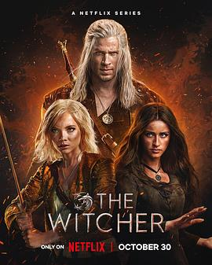

6.2
猎魔人 第四季
The Witcher Season 4
2025
美国
评分 6.2
导演:
塞尔吉奥·米米卡-戈赞
演员:
利亚姆·海姆斯沃斯 / 弗蕾娅·艾伦 / 安亚·查洛特拉 / 劳伦斯·菲什伯恩 / 乔伊·巴泰 / 克莱尔·凯奇 / 沙尔托·科普雷
类型:
冒险,剧情,动作,奇幻,悬疑
剧情简介
在一场撼动整个大陆的大战之后，猎魔士杰洛特（利亚姆·海姆斯沃斯 饰）、女法师叶奈法（安亚·查洛特拉 饰）以及公主希里（弗蕾娅·艾伦 饰）三人被迫分道扬镳，各自踏上迥异的道路。大陆的战争未止，怪物亦未灭，背后的阴谋悄然上升。杰洛特带着愤怒与疲惫重返荒原，誓言再也不做旁观者；叶奈法则在法师学院旧址中重建秩序，却发现魔法比她想象的还要脆弱；而希里——在一群被称作“老鼠帮”的流浪少年中，她用新身份探寻力量、归属与复仇。影片描写：当狼人的惨叫掠过夜色山谷，杰洛特拖着血腥长剑冲入薄雾；在战火废墟里，希里背靠篝火，黑眸中映出流星般的渴望；叶奈法身处大讲堂，回声叩击石壁，法杖末端松动的水晶象征权力的移转与危机。随着敌人浮现，一个从二十世纪六十年代流传下来的老计划浮出水面，它将人类与超自然之间的界限撕裂。本季的最大亮点是：世界不再只是“你杀怪我救人”，而是一场关系、信任、选择的试炼。狼血赋予了杰洛特力量，也拖着他回望过去的伤口；希里明白力量不仅在于斩杀，更在于如何选择；叶奈法意识到，有时候真正的敌人并非怪物，而是信念的崩塌。导演通过火光、寒风、破碎镜片展现：当战争蔓延至每一个角落，英雄也只能选择与阴影共舞。